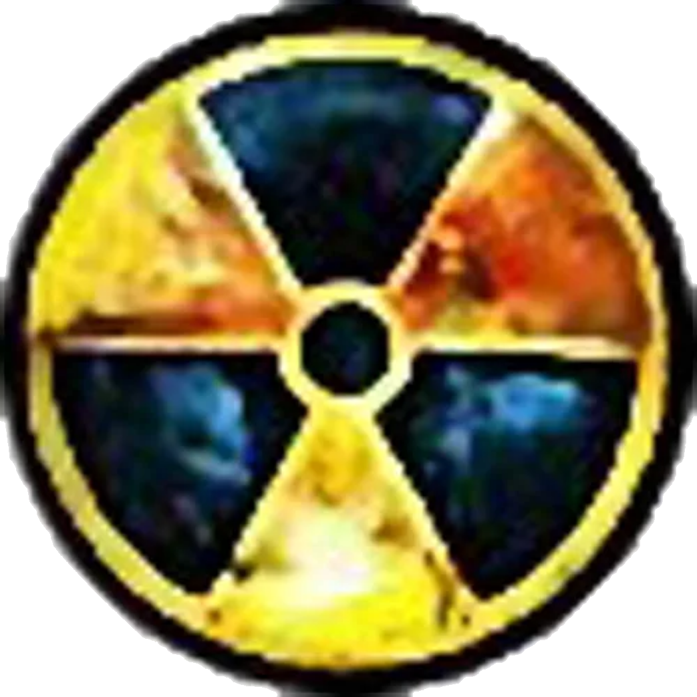

S.T.A.L.K.E.R. Shadow of Chernobyl

———Предметы———
Хлеб

Описание: Неизвестно, кто умудряется печь батоны на территории Зоны, однако этот хлеб не заражён и вполне съедобен. Во всяком случае, никто из сталкеров пока не жаловался.
Местонахождение: В продаже у торговцев; Часто можно встретить в рюкзаках сталкеров; В тайниках.
Эффект: Здоровье [+5%]; Насыщение [+20%].
Вес: 0.3 Kg
Цена: 20Ru.
Колбаса

Описание: Часто за неимением лучшего, эта колбаса — смесь курятины и соевого заменителя — завтрак, обед и ужин сталкера.
Местонахождение: В продаже у торговцев; Часто можно встретить в рюкзаках сталкеров; В тайниках.
Эффект: Здоровье [+10%]; Насыщение [+30%].
Вес: 0.5 Kg.
Цена: 50Ru.
Тушёнка "Радость туриста"

Описание: Консервы с растащенного сталкерами армейского продовольственного склада. Срок годности вроде бы не истёк.
Местонахождение: В продаже у торговцев; Часто можно встретить в рюкзаках сталкеров; В тайниках.
Эффект: Здоровье [+15%]; Насыщение [+40%].
Вес: 0.5 Kg.
Цена: 100Ru.
Энергетический напиток "Non stop"

Описание: Отличный энергетический напиток Non Stop. Содержит кофеин, таурин и мощный витаминный комплекс, снимающие усталость и прибавляющие силы. Не в состоянии сделать даже шаг? Тогда это именно то, что нужно.
Местонахождение: В продаже у торговцев; Часто можно встретить в рюкзаках сталкеров; В тайниках.
Эффект: Выносливость [+100%].
Вес: 0.3 Kg.
Цена: 75Ru.
Водка "Казаки"

Описание:Водка производства компании GSC. Хорошо пьётся, заметно снижает воздействие радиации, однако злоупотреблять ей не следует.
Местонахождение: В продаже у торговцев; Часто можно встретить в рюкзаках сталкеров; В тайниках.
Эффект: Вывод радионуклидов [-30%]; Насыщение [+1%]
Вес: 0.5 Kg.
Цена: 100Ru.